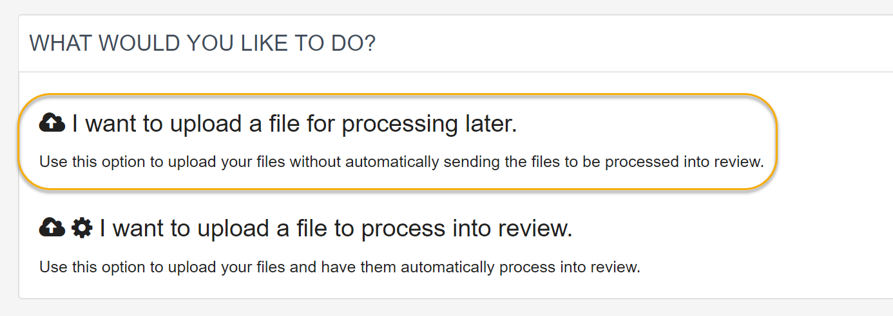
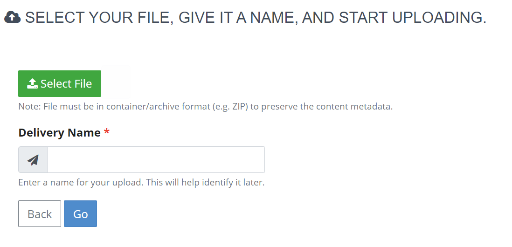
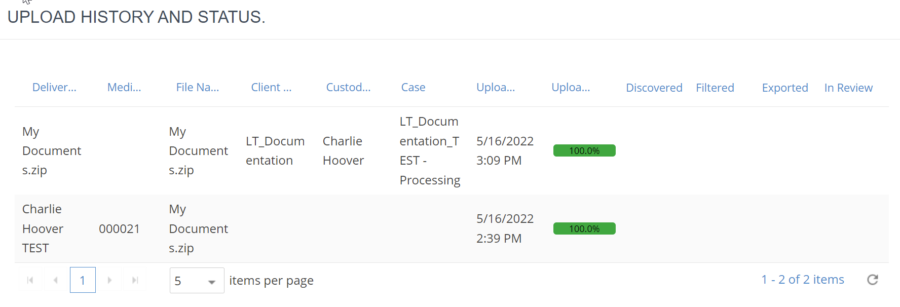
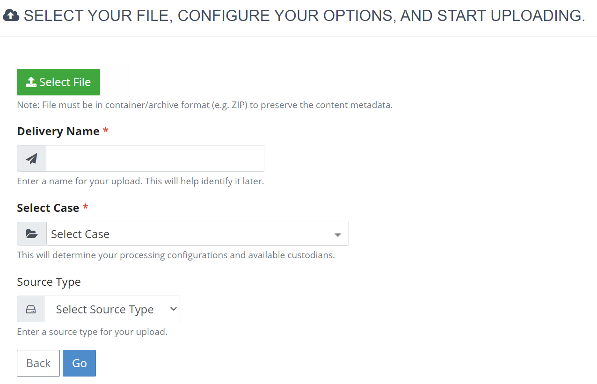

Prior to creating a Self-Service upload, you must have created a Processing Case. See
There are two options available for uploading data via Self-Service:
|
Option |
description |
|---|---|
|
Upload data for later |
The user may upload data, and a delivery record for this data will be created in Media Manager; however this data will not process automatically into Review. |
|
Upload & process data |
The user may upload data to process directly into Review. With this option, data streams through |
These options are dependent on Self-Service permissions assigned at the group level by
|
|
Prior to creating a Self-Service upload, you must have created a Processing Case. See |
Self-Service allows you to upload and save data to be processed and imported into review at a later time.
For a visual overview, click the video below.
To upload a file for processing later:
On the Self-Service page, click I want to upload a file for processing later.

Click Select File.

Select the file you want to upload and click Open.
Click Go.
|
|
Note: The file is uploaded to
a network location that is defined in |
The Upload history and status area shows
all upload activity for the current user. See

By uploading to process into review, you can upload data to your infrastructure, a service provider, or the
For a visual overview, click the video below.
|
|
Data uploaded using Self-Service
can also stream into |
To upload a file for processing into review:
On the Self-Service page, click I want to upload a file to process into review.


View field descriptions below:
|
Field |
Description |
||
|
Delivery Name |
Defaults the file name as the Delivery Name; change the name if needed. For Media Manager administrators, this is the name used on the Deliveries tab. |
||
|
Select Case |
Select the Processing case into which the file will be processed. For long lists (see the tip for custodians below), the Select Case field also includes a “find” field. Available cases are defined in your user
profile; if you do not see the needed case, contact your |
||
|
Select Custodian |
After you select the case, select or add the needed custodian. The custodian is affiliated with the selected case.
If the needed custodian is not listed:
If the custodian you need does not exist, you must add it:
|
||
|
Source Type |
Optional: Select the original source of the file you are uploading. The source type can be leveraged during Review for batching purposes, document foldering, or other workflows. For example, you may be uploading a file from a laptop, an external hard drive, or via network share. |
When you are finished completing fields, click Go.
If you created a new custodian(s), click OK in response to the resulting confirmation message.
Wait
as the file is uploaded.
Job progress is shown in the Upload Status
area at the bottom of the page. The Upload
history and status area shows all upload activity for the current
user. See
Optional: For
larger files and/or slower network speeds, you can pause or cancel the
job if needed. See
When the processing is completed, repeat these steps to upload other files, if needed.
Communicate upload information to appropriate personnel.
Related Topics